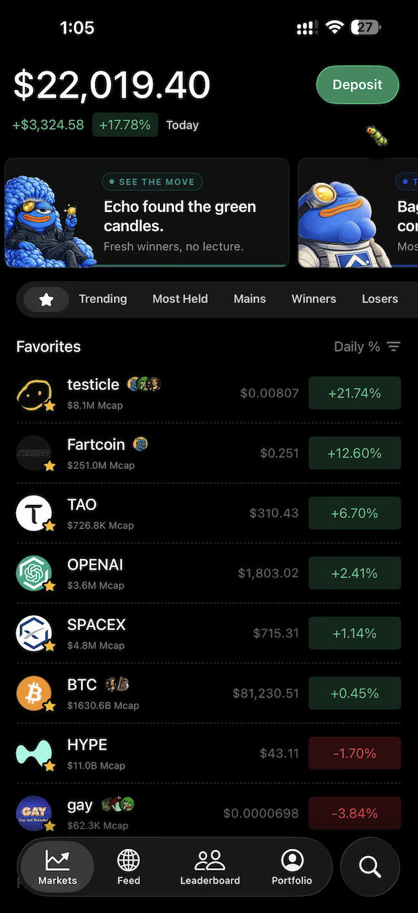

Higher 两年：从"先用起来"到"学会活下来"
从注册流程到风险教育，Higher 在 Solana 模因币生态里走出了一条不替用户做决策的消费级路线。看看它 Beta 阶段的迭代取舍背后是什么逻辑。
Higher 现在还在 Beta，但官网上已经能看出它有一个消费级 App 该有的所有骨架——钱包、交易、社交、教育揉在一个 iOS 17.5 以上就能跑的界面里，在 App Store 搜索或从下载页都能拿到。我最近跟着一个朋友装了它，第一感觉是"怎么把模因币交易做得这么像短视频 App"——Feed 里刷的不是视频，是别人的买卖操作，刷到合适的直接点进去就能买。但印象更深的是通知不工作这件事：开了 Follow 之后等了半天才反应过来 Higher 没给我推过一条，翻了Higher文档才发现它自己也承认 Beta 阶段通知有各种已知问题。想知道它怎么走到今天的，就得看看它这两年的迭代逻辑。
来路：从钱包起点往上叠
Higher 没给我标版本号，但功能模块的组织方式本身就是时间线。它的起步点很明确——没有像 Phantom 或 Backpack 那样从"安全自托管钱包"切入，而是从"让新手先用起来"切入。注册流程就是最好的例子：传统自托管钱包强制你先抄 12 个助记词才能开始，Higher 把这个顺序倒过来了——先用邮箱注册，后台自动给你建 Solana SPL 钱包，Apple Pay 一键入金就能立刻开始 swap，助记词随时可以从设置里导出。这个决策看起来只是改了用户流程，但背后是对"自托管钱包最大痛点"的判断——太多人被看不懂的英文词吓跑了。
但 Higher 没停在钱包层面。交易功能加进来之后，它做了一个更激进的叠加：把社交跟单直接嵌进了交易流程。Feed 页面像社交网络一样滚动——别人买了哪个币、卖了多少、盈亏多少，实时推到你面前。Leaderboard 按 PnL、ROI、成交量和 Points 四个维度排名，可以按 7 天或 30 天窗口筛选。你 Follow 一个顶级交易员之后，他的每笔操作都会出现在 Following 专属视图里，通知也能推送到你手机。
有意思的是，Higher 始终没有做"自动跟单"这个功能。Follow 只是让你看到信号，你得自己手动执行交易。文档里说得很直白——它是信号工具，不是量化跟单服务。
然后是 Learn 教育模块。这个模块的出现时机很能说明问题——它不是早期就有的，而是当社交功能已经跑起来之后才补上的。Learn 里最扎实的内容是 Rug Pull 风险教育：三种手法（抽流动性、庄家砸盘、蜜罐陷阱）的运作机制、识别特征、在 Higher 里怎么判断。Higher 的立场非常明确——它不替用户做 Rug Pull 检测。代币详情页不直接显示流动性池状态，不做 Honeypot 检测，不做任何形式的自动安全判断。文档里直接说 "Ultimate rug-pull avoidance is up to the user"。
规律：从"不做什么"看团队优先级
从这些明确的"不做"来看，Higher 这两年一直在死磕的东西和它一直不管的东西，边界很清晰。
Higher 一直在做的：先让用户进来和留在里面，再帮用户活下来，但始终不替用户做决策。注册流程的"先用再备份"是这个思路，Feed 里用别人的真实交易制造内容密度也是这个思路——先让你有东西可看、有东西可点，把门槛降到最低。等你留下来了，再通过 Learn 模块把风险教育补上。
Higher 一直不管的：完美的基础设施体验和保姆式的安全兜底。通知系统在 Beta 阶段的各种问题就是一个例子——iOS 17.5 以上有兼容性瑕疵、推送做了聚合不是每笔交易单独推、被 iOS 后台清除后可能延迟，Higher 没在 Beta 期死磕通知的完美，而是让 Feed 页面可以实时刷新作为替代。安全方面更是如此：助记词备份不强制在注册环节完成、不替你检测 Rug Pull、不帮你做投资决策——Higher 只提供信息，判断全在你。
这个立场在其他功能里也反复出现。隐私设置让顶级交易员可以隐藏自己的交易，Higher 尊重这个选择而不是强制公开。钱包安全用 Privy 做基础设施——私钥本地生成和存储，Higher 服务器无法访问——这个底线从一开始就没松，但助记词备份的时机又给了用户选择权。
Higher 的 Learn 教程里有一句很有代表性的话："The app itself cannot protect you from a rug-pull token — always verify token metrics before buying." 这句话放在 FAQ 里，不是免责声明，是它整个产品逻辑的缩影。

预判：照这个路线，下一步往哪走
照 Higher 两年迭代的逻辑推，下一步大概率会往两个方向走。一是把 Learn 模块和交易流程更深度地结合——比如在买入新币之前弹出相关的风险教育内容，而不是放在独立的 Learn 入口里用户自己去找。二是在"信息"层面继续加厚——比如把 RugCheck 或 Solscan 的检测结果直接嵌入代币详情页（Higher 一直说自己不做检测，但它可以展示第三方检测结果），或者增加更多维度的交易员筛选条件。
但我不会押注 Higher 突然开始做自动跟单或内置 Rug Pull 检测。从它两年的迭代逻辑看，"给信息不替你决策"是这个团队的核心定位，不像是会轻易动摇的方向。
另外，Higher 目前只在 iOS 17.5+ 上可用，Solana 单链支持也限制了它的覆盖范围——这些看起来是 Beta 阶段的临时限制，但什么时候放开、放多宽，得看它在 iOS 生态里能跑多大再说。Beta 阶段的功能取舍往往比正式版更能暴露团队的真优先级，从 Higher 这两年的节奏看，他们不急着把摊子铺大，而是先把消费级体验的那个"度"摸准。
Higher 相关的资料仓库维护了三份——GitHub 是主仓，国内访问可以看Gitee 或GitCode 的同步副本，分类目录都保持一致。